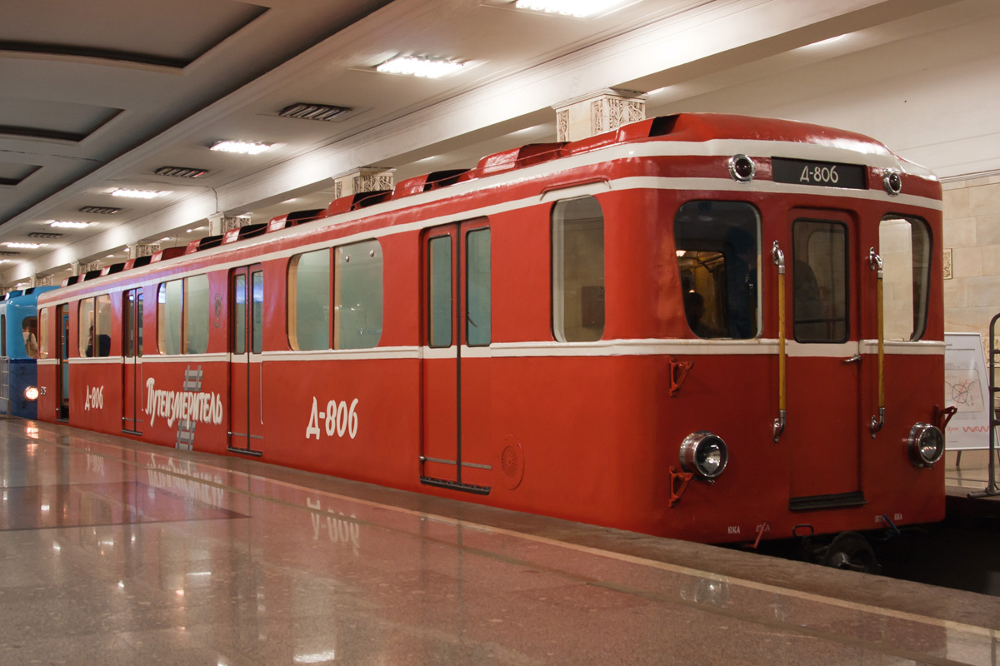
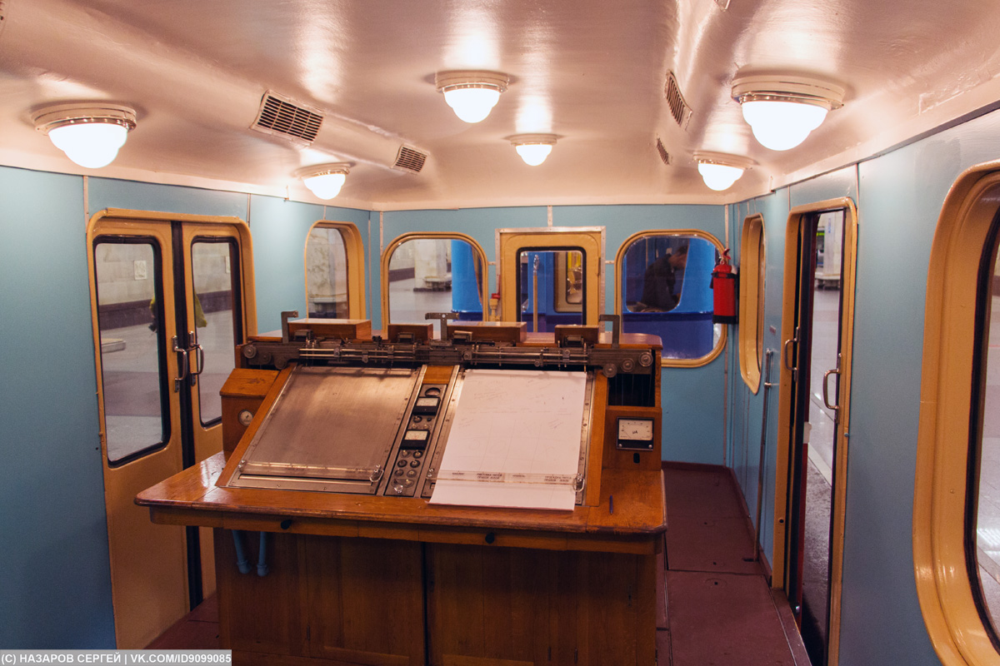
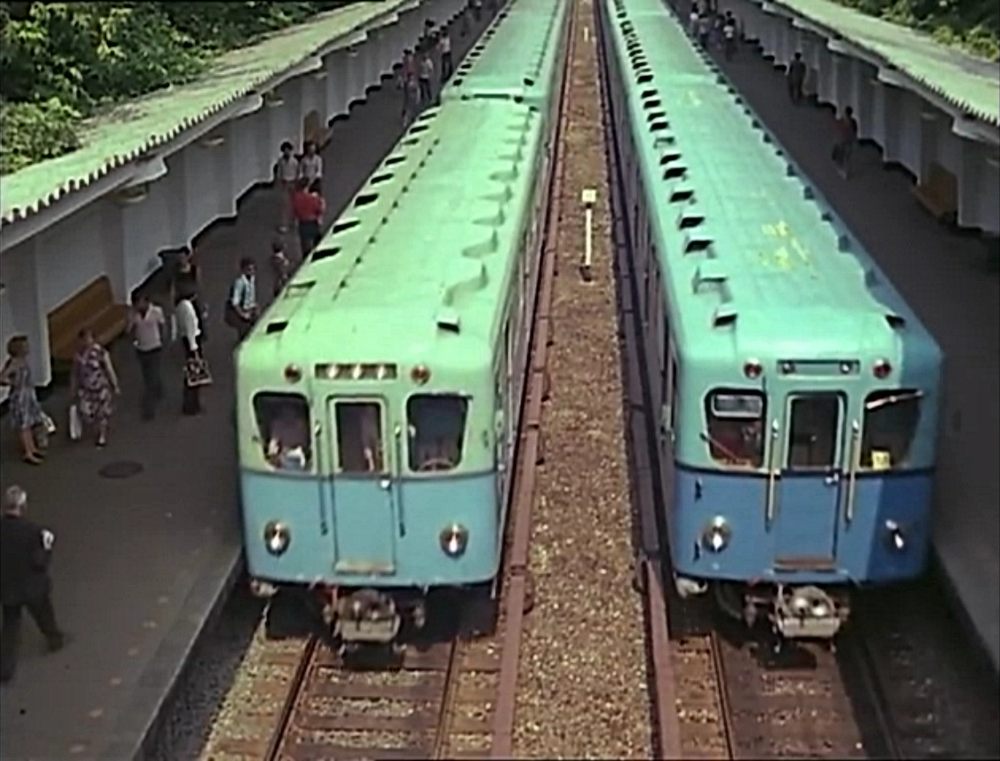
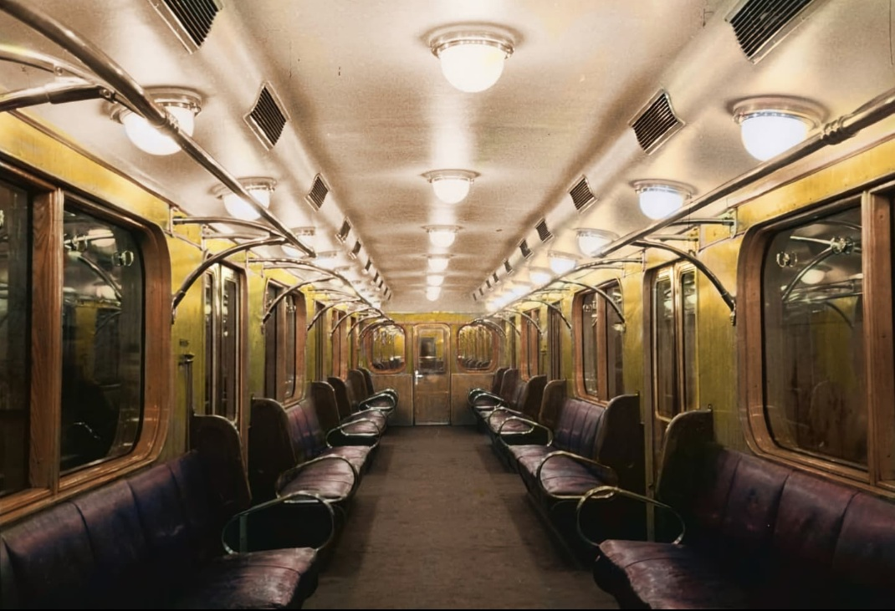

М5 — опытные электровагоны
М5 — тип опытных моторных электровагонов Московского метрополитена, спроектированных и изготовленных Мытищинским машиностроительным заводом и заводом «Динамо» имени С.М. Кирова в 1948–1950 годах. Это были прототипы вагонов типа Д, серийный выпуск которых начался в июне 1955 года.
На вагонах М5 отрабатывались новые конструктивные решения: облегчённые тележки, тяговые двигатели ДК-104 с опорно-рамным подвешиванием, люлечное рессорное подвешивание, кулачковая муфта и автосцепка Шарфенберга. Позже, в 1953 году, часть вагонов была модернизирована и получила обозначение УМ5.
Общая информация
🏭 Производство
Заводы: Мытищинский машиностроительный завод, завод «Динамо» имени С.М. Кирова
Главный конструктор: Г.И. Каштанов
Разработка проекта: 1948–1949
📅 Выпуск
Ноябрь–декабрь 1949: вагоны №401–404, 406
Январь 1950: вагон №405
1951: перенумерация в 501–506
1953: перенумерация в 601–606, модернизация в УМ5 (701–706)
Ключевое: М5 — это опытные электровагоны, ставшие прототипами серийных вагонов типа Д. На них впервые в отечественном метро были применены облегчённые тележки, двигатели ДК-104 с опорно-рамным подвешиванием и люлечное рессорное подвешивание.
Технические характеристики
| Параметр | Значение |
|---|---|
| Годы выпуска | 1949–1950 |
| Тара вагона | 36,2 т |
| Длина | 19 166 мм |
| Ширина | 2 700 мм |
| Высота | 3 695 мм |
| Конструкционная скорость | 75 км/ч |
| Ускорение | 1,0 м/с² |
| Замедление | 1,0 м/с² |
| Тип тормоза | Электродинамический |
| Вместимость при плотности 10 чел/м² | 264 человека |
Окраска: Состав из вагонов типа М5 был окрашен в кремовые и красные цвета. Испытания опытного состава показали хорошие ходовые качества вагонов.
История модели
Разработка проекта
Проект вагонов типа М5 разрабатывался на Мытищинском машиностроительном заводе под руководством главного конструктора Г.И. Каштанова. В разработке участвовал завод «Динамо» имени С.М. Кирова.
Первые пять вагонов
Выпущены первые пять электровагонов модели М5: №401–404 и №406.
Вагон №405
Выпущен шестой опытный вагон №405. Он имел особенности: у каждого колеса была только одна тормозная колодка.
Перенумерация в 501–506
Чтобы не прерывать номерной ряд строившихся вагонов типа Г, вагонам М5 присвоены номера 501–506.
Модернизация и обозначение УМ5
Вагоны М5 модернизированы на Мытищинском заводе. Установлены новые контроллеры, реостатные контроллеры ПКГ-758А-1, реле Р-40В. Модернизированные вагоны получили обозначение УМ5 и номера 701–706.
Начало серийного выпуска типа Д
Мытищинский завод и завод «Динамо» приступили к серийному выпуску вагонов типа Д — дальнейшего развития М5/УМ5.
Конструктивные особенности
⚙️ Тележки
Коренному изменению подверглась конструкция тележек. Тяговые электродвигатели с опорно-рамным подвешиванием, вращающий момент передавался через кулачковую муфту и зубчатую передачу в жёстком кожухе. Рама тележки Н-образной формы. Масса рамы уменьшилась с 2,2 до 1,4 т, тележки — с 11,5 до 9,3 т.
⚡ Тяговые электродвигатели
Применены тяговые электродвигатели ДК-104Б с консольным подвешиванием к средним поперечным балкам рамы тележки. Масса двигателей ДК-104 уменьшилась с 1490 до 700 кг по сравнению с ДК-102 вагонов типа Г.
🪑 Люлечное рессорное подвешивание
Впервые на метрополитене применено люлечное рессорное подвешивание, включавшее «глухую» нерегулируемую подвеску и эллиптические рессоры с уменьшенным с 6 до 5 количеством листов.
🚪 Кузов
При одинаковой с вагонами типа Г форме кузова вагоны М5 имели упрощённую конструкцию за счёт унификации поперечных и средних продольных балок рамы. Отбойные брусья отсутствовали; толщина внешней обшивки уменьшилась с 3 до 2,5 мм.
🔗 Автосцепка
Опытные вагоны оборудованы облегчённой автосцепкой жёсткого типа Шарфенберга, обеспечивавшей механическое сцепление, соединение пневматических магистралей и электрических цепей.
🎨 Экономия электроэнергии
По данным специалистов, каждый электровагон типа М5 обеспечивал по сравнению с вагонами типа Г экономию электроэнергии около 500 тыс. кВт·ч в год.
Вагоны 801–806
После модернизации вагоны УМ5 получили номера 801–806. Краткая история каждого:
| № | Построен | Списан | Судьба |
|---|---|---|---|
| 801 | 11.1949 | 04.1976 | ТЧ-3 «Измайлово», пассажирский |
| 802 | 11.1949 | 05.1986 | ТЧ-3, позже — шиномонтаж у проходной, утилизирован в 2018 |
| 803 | 11.1949 | 1989 | ТЧ-3 «Измайлово», пассажирский |
| 804 | 11.1949 | 06.1989 | С 1980 — грузовой, ТЧ-6 «Планерное» |
| 805 | 11.1949 | 03.1996 | Служебный, ТЧ-9 «Фили», утилизирован |
| 806 | 11.1949 | — | Сохранился — Народный музей Московского метрополитена |
Общее: Все вагоны прошли путь 401 → 501 → 601 → 701 → 801–806, сменили несколько депо и к 1990-м годам были списаны. Единственный сохранившийся — № 806.
Вагон №806 — единственный сохранившийся
📅 Постройка
Ноябрь 1949
Построен как М5 №406, позже модернизирован в УМ5
📍 Местонахождение
Народный музей Московского метрополитена
С 2015 года — музейный экспонат
Путь вагона: 406 → 506 → 606 → 706 → 806 → Д-806. Сменил 7 депо, работал пассажирским, путеизмерителем (2000–2015), а с 2015 года — музейный экспонат.
Связь с Еж3-путеизмерителем
УМ5 №Д-806 тесно связан с современным служебным составом Еж3-путеизмеритель, который сегодня работает в Московском метрополитене.
🚆 Историческая преемственность
- УМ5 №Д-806 был предшественником современного путеизмерителя
- С 2000 по 2015 год сам служил путеизмерителем в ТЧ-6 «Планерное»
- В 2015 году передан в музей, уступив место новому составу
🔧 Еж3-путеизмеритель сегодня
- Составность: 5564 — 6552 — 7374 — 6719 — 5824
- Депо приписки: ТЧ-4 «Красная Пресня» (с 01.10.2020)
- В составе — последний оригинальный Еж3 в РФ (№5824)
- Вагон-лаборатория СЦБ и связи №5564 служит с 1975 года
Важно: 14.01.2008 состоялся первый и последний выезд старого путеизмерителя УМ5 №806 в дни пассажирской эксплуатации нового участка до станции «Строгино». После этого УМ5 №806 окончательно уступил место новому Еж3-путеизмерителю.
Фотогалерея

Музейный вагон на выставке ретро-вагонов.

Салон вагона в музейном состоянии.

В единственном поезде из вагонов данной модели.

На фото — салон вагона Д №807.
Нажмите на фото для увеличения
«М5 — это опытные электровагоны, ставшие прототипами типа Д. Их долгая жизнь — от пассажирской работы до путеизмерителя и музея — доказала, что даже опытные машины могут служить десятилетиями».